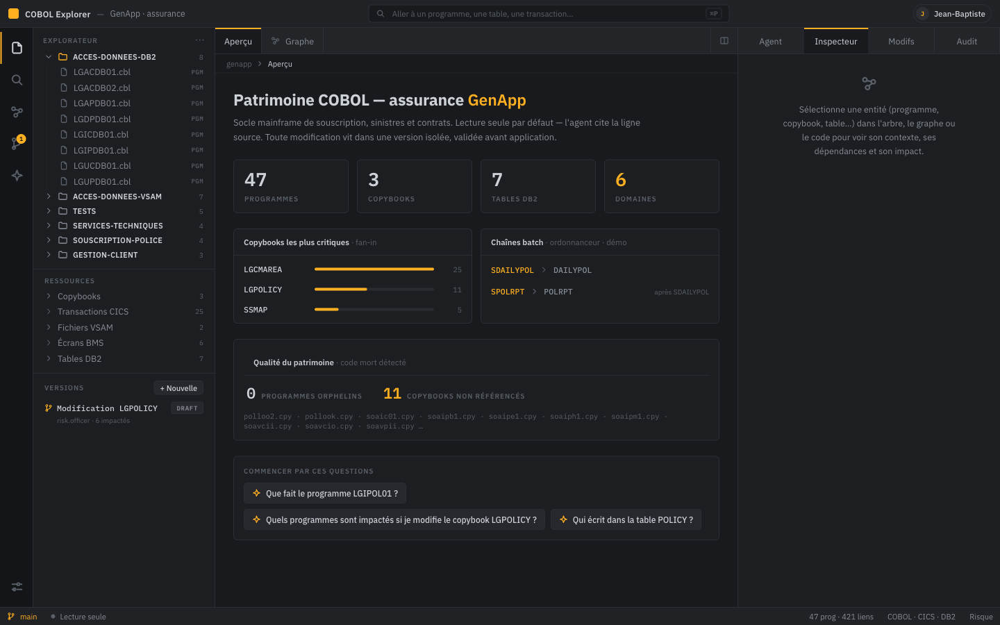
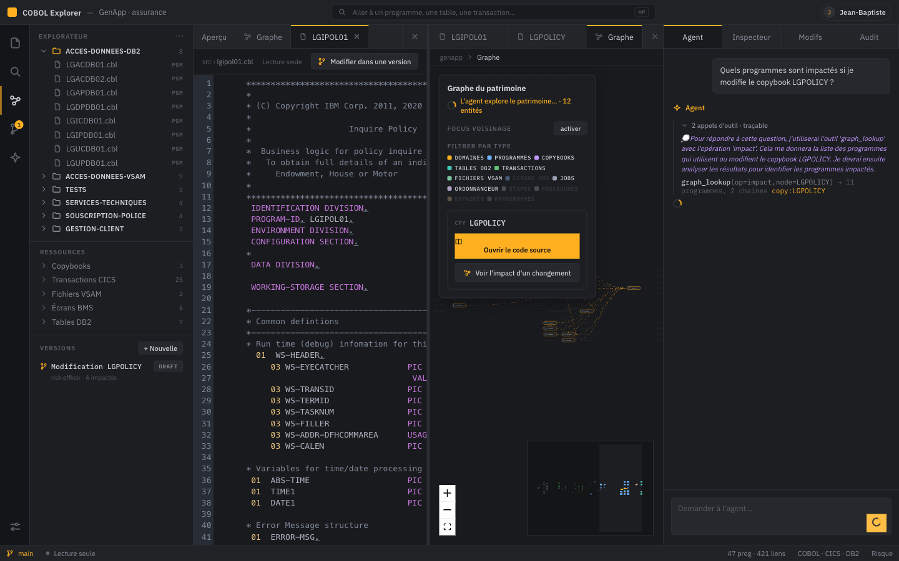
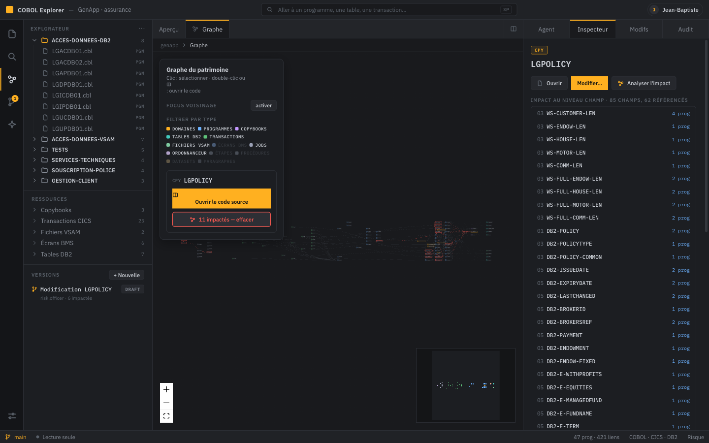
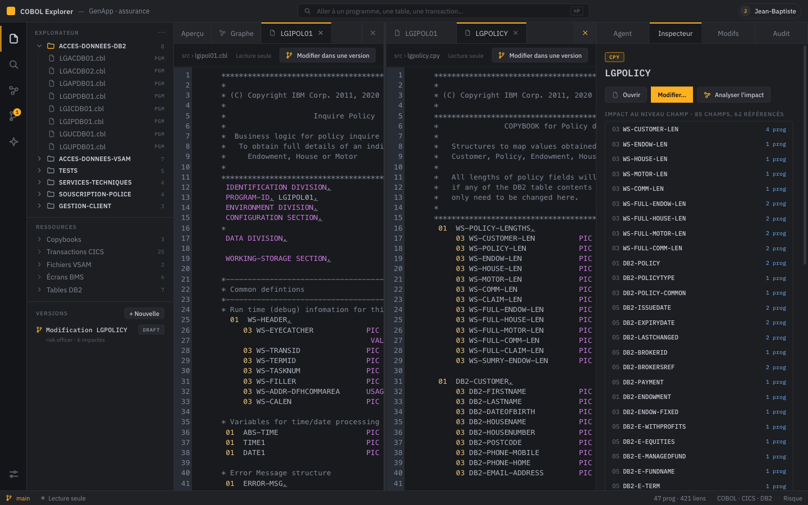
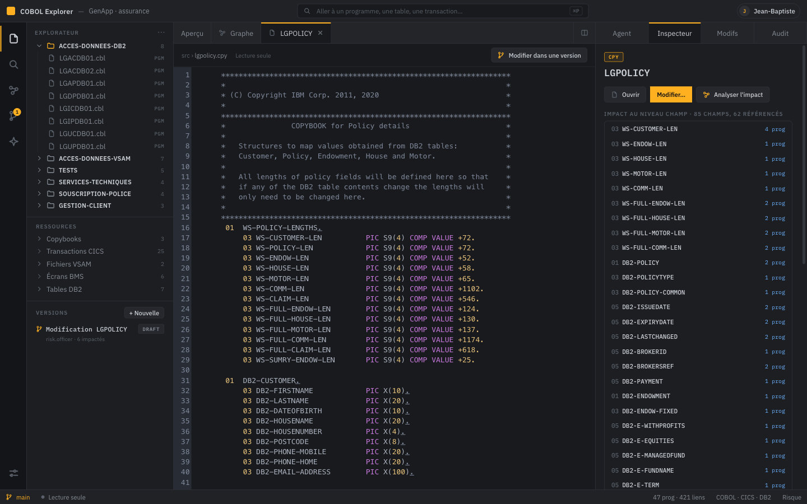

Comprendre et gouverner 60 ans de patrimoine COBOL, avec un agent IA
traçable jusqu'à la ligne de code — pour les développeurs et les équipes risque & conformité.
IBM GraniteGranite EmbeddingsBeeAIMCP → IBM BobNeo4jpgvector
COBOL Explorer — hackathon IBM AI Builders (Bob)corpus démo : GenApp · assurance
02 Le problème
Des milliards de lignes COBOL, plus personne pour les lire.
Les sachants partent
La connaissance quitte l'entreprise plus vite qu'elle ne se transmet. Le dernier qui savait « pourquoi » est parti à la retraite.
Zéro documentation fiable
Le seul document de référence, c'est le code lui-même — et il fait des millions de lignes.
Peur de toucher
Un copybook partagé par 25 programmes : changer un champ sans connaître l'impact, c'est une panne de production.
Le régulateur exige des preuves
DORA, ACPR : il faut prouver quelle règle s'applique, où elle vit dans le code, et qui y a touché.
Les assistants IA génériques répondent — mais sans preuve. Sur un patrimoine
d'assureur, une réponse plausible mais fausse est pire que pas de réponse.
Chat qui répond en citant fichier:ligne — chaque citation cliquable ouvre le code et surligne la ligne. Trace d'outils streamée en direct (SSE).
Graphe vivant
339 nœuds en couches (ordonnanceur → jobs → transactions → programmes → données). Focus voisinage, rayon d'impact, et le graphe s'illumine pendant que l'agent raisonne.
Éditeur à onglets avec split view (programme à gauche, son copybook à droite), inspecteur de dépendances,
panneau de versions, journal d'audit. Le tout dans une seule console web.
COBOL Explorer03 / 18
04 Capture réelle du produit
L'atelier, en vrai.

Aperçu du patrimoine — stats, copybooks critiques par fan-in (LGCMAREA ×25), chaînes batch de
l'ordonnanceur, carte « Qualité » (0 orphelin · 11 copybooks morts), questions de départ. À droite : Agent · Inspecteur · Modifs · Audit.
COBOL Explorer04 / 18
05 Le principe fondateur
Comprendre ≠Modifier.
lecture seule
🔎 Comprendre
Naviguer, questionner, analyser — sans jamais altérer le socle.
L'agent lit le code, parcourt le graphe et cite la ligne source à chaque affirmation.
Zéro effet de bord, par construction.
think « où est calculée la prime ? » search_code → MAJORER-PRIME lgipol01.cbl:50 ✓ sources vérifiées
version isolée
✍️ Modifier
Toute modification vit dans une branche git réelle (commit par édition,
git diff réel). Impact calculé avant, revue d'équipe, puis merge-gate :
rien n'est appliqué au patrimoine sans confirmation explicite.
3 de ces outils sont aussi exposés en MCP pour IBM Bob06 / 18
07 Complémentarité · MCP → IBM Bob
Bob lit le code. Le MCP lui tend le patrimoine déjà calculé.
IBM Bob
excellent lecteur de code — grep, ouvrir, suivre un CALL
Bob lit et raisonne sur le code comme Claude Code — c'est déjà puissant. COBOL Explorer ne remplace pas ça : il lui tend, via MCP, un patrimoine déjà calculé (table des symboles + call graph + lignée). Bob n'a plus à tout re-dériver à chaque question, et il obtient ce qui ne vit dans aucun fichier à lire.
La question où le graphe gagne sa place
« Je change WS-TAUX dans le copybook LGPOLICY. Liste exhaustivement tous les programmes et toutes les chaînes batch impactés, avec preuve. » — une réponse exhaustive, déterministe, avec les chaînes d'ordonnanceur.
🤖 Ce que Bob fait déjà — très bien
un agent qui lit et raisonne, comme un dev senior
✓lit, grep, ouvre, suit un CALL / un COPY à la demande
✓comprend le COBOL et raisonne sur ce qu'il lit
✓orchestre : c'est lui qui décide quand appeler l'outil
🕸 Ce que le MCP lui apporte en plus
graph_lookup · calculé une fois, offline, servi à Bob
✓ la clôture transitive exhaustive, pré-calculée — plutôt que la re-dériver token par token à chaque prompt
✓ les chaînes d'ordonnanceur, qui ne sont dans aucun fichier à lire (elles vivent dans l'export scheduler) — jointes au graphe
✓ la citation fichier:ligne systématique, déterministe à chaque fois
L'analogie LSP — un IDE donne au développeur « go-to-definition / find-references / call-hierarchy » via un LSP. Pas parce que le dev ne sait pas lire : parce que re-dériver ces liens à la main coûte cher. COBOL Explorer joue ce rôle pour Bob — cross-langage (COBOL + JCL + DB2 + ordonnanceur), à l'échelle de tout le patrimoine.
Honnêtement : read_source_lines recoupe ce que Bob sait déjà faire — sa valeur est d'être la jambe citation de graph_lookup. Le MCP brille là où la lecture seule doit tout reconstruire : la clôture exhaustive et les relations hors-code, à l'échelle réelle.
3 outils exposés en MCP à IBM Bob : graph_lookup · search_code · read_source_lines07 / 18
Parcours déterministe — aucun LLM dans la boucle, construit par parsing du code
Impact (que casse une modif ?), lignée de données, chaînes d'appels, profil fonctionnel
Chaque arête porte sa preuve : le numéro de ligne du COPY / CALL / EXEC SQL
Repli automatique NetworkX in-process si la base tombe
« Quels programmes cassent si je modifie LGPOLICY ? »
→ 11 programmes (LGACDB01 L.88, LGIPOL01 L.55…),
→ jobs DAILYPOL·POLRPT → chaînes SDAILYPOL·SPOLRPT
SELF-HOSTED
◎ RAG vectoriel — pgvector
sémantique, par intention · PostgreSQL + HNSW cosine
Embeddings IBM Granite (granite-embedding:278m, 768 dimensions)
Trouver quand on ne connaît pas le nom : concepts, intentions, métier
Index HNSW dans PostgreSQL — la voie de scale (millions de chunks)
Branché à l'agent, à la palette ⌘P de l'UI, et au MCP
« Où est le logging ? » (aucun nom connu)
→ LGSTSQ0.64 · LGWEBST5 0.55 · LGSETUP 0.55
Hybridequestion floue → search_code (trouver le programme)
→ graph_lookup (structurer : impact, dépendances) → réponse citée— le LLM route, et l'étape think logue pourquoi.
Question
RAG choisi
Pourquoi
« Qui utilise LGPOLICY ? » / « qu'est-ce qui casse ? »
Graphe
réponse exacte, exhaustive, prouvée ligne par ligne
« Où est calculée la prime ? » (nom inconnu)
Vecteur
similarité sémantique sur le contenu du code
« Que fait le programme de souscription ? »
Hybride
vecteur pour trouver, graphe pour profiler
docker compose up -d · make serve-scale08 / 18
09 Le chemin de raisonnement, en vrai
Chaque réponse arrive avec son raisonnement.
Trace réelle du produit (streaming SSE, événement par événement) — la question :
« Que fait LGIPOL01 et quels programmes sont impactés par LGPOLICY ? »
event: start event: trace 💭 think → « LGIPOL01 est probablement un composant clé de la gestion des polices ; . je cherche d'abord sémantiquement, puis je profile par le graphe » event: trace search_code(query=policy inquiry) → 5 résultats lgipol01.cbl event: trace graph_lookup(op=summary, node=LGIPOL01) → profil : 2 copybooks · 2 appels · 4 transactions event: trace graph_lookup(op=impact, node=LGPOLICY) → 11 programmes, 2 chaînes batch event: answer réponse Markdown : fonction métier + 11 programmes avec leur ligne (LGACDB01 L.88…) event:verify ✓ chaque citation fichier:ligne re-vérifiée dans le corpus event: done
Pendant la requête
Le graphe central se grise, puis les entités touchées par le RAG
se rallument une à une avec un halo ambre, et la vue zoome dessus. Le raisonnement devient visible.
Citations cliquables
Chaque fichier:ligne de la réponse ouvre le code
et surligne la ligne 2 s. La preuve est à un clic.
Sans LLM ? Ça répond quand même
Si Ollama est down, un fallback déterministe répond aux questions
structurelles (impact, profil) par le graphe seul — honnêtement annoté.
COBOL Explorer09 / 18
10 Capture réelle · pendant une requête
Le graphe s'illumine au fil du raisonnement.

En direct — le patrimoine se grise, « l'agent explore… 12 entités » : les nœuds touchés par le RAG
se rallument un à un. À droite, l'étape 💭 think explique pourquoi il choisit
graph_lookup(op=impact) → 11 programmes, 2 chaînes. Au centre : split view code + graphe.
COBOL Explorer10 / 18
11 Traçabilité & gouvernance — le pilier assureur
Chaque réponse prouvée, chaque action auditée.
🛡 Garde-fou anti-hallucination
Après chaque réponse, le serveur re-vérifie chaque citationfichier:ligne contre le corpus
(fichier existe ? ligne dans les bornes ?). L'UI affiche ✓ 4 sources vérifiées ou
⚠ une citation ne résout pas. Une réponse plausible mais non ancrée ne passe pas en silence.
⛓ Journal d'audit inviolable
Chaque action (question, lecture de source, modification, fusion — et chaque refus) est journalisée dans une
chaîne HMAC-SHA256 : altérer une ligne casse la chaîne. Onglet Audit dans l'UI avec badge
✓ chaîne intègre.
👥 RBAC par rôle
5 rôles : dev · architecte · risque · conformité · auditeur. Proposer ≠ fusionner ≠ auditer.
Mode enforce : identité acceptée uniquement via un proxy d'authentification (OIDC/SAML) —
les en-têtes seuls ne sont pas une frontière de sécurité, et c'est documenté.
📊 Qualité mesurée, pas supposée
Jeu de Q/R golden notées sur 3 axes (rappel d'entités, ancrage des citations, couverture d'impact) —
3/3 au vert, exécuté en CI : toute régression de qualité de réponse casse le build.
make eval.
# extrait réel du journal
10:52:03 Jean-Baptiste risk ask « Quels programmes sont impactés si je modifie LGPOLICY ? » granted
10:52:41 Alice dev read file:lgipol01.cbl granted
10:53:12 invité guest merge tarif-souscription-v2 denied
COBOL Explorer11 / 18
12 Comprendre, en profondeur
Des analyses structurelles, calculées sur le graphe.
85
champs analysés — LGPOLICY
Impact au niveau champ : pour chaque champ d'un copybook, quels programmes le référencent
(WS-CUSTOMER-LEN → 4 prog). Savoir ce que casse un changement de PIC avant de le faire.
11
copybooks non référencés
Détection de code mort : programmes orphelins (rien ne les exécute : ni CALL, ni transaction,
ni step batch) + fichiers copybook jamais COPYés. Carte « Qualité du patrimoine » dans l'Aperçu.
25→2
écran → programme → donnée
Chaîne complète : transactions CICS → programmes → copybooks → tables DB2 / fichiers VSAM →
jobs batch → chaînes de l'ordonnanceur. La lignée de bout en bout, navigable.
Profil fonctionnel d'un programme
op=summary : copybooks, tables lues/écrites,
écrans, appels entrants/sortants, transactions + l'en-tête du source — pour répondre à « que fait X ? » complètement.
Fan-in des copybooks critiques
LGCMAREA copié par 25 programmes, LGPOLICY par 11 —
les points de fragilité du patrimoine, identifiés d'un coup d'œil.
Résolution copybooks industrielle
Concaténation SYSLIB, COPY REPLACING
(pseudo-texte), COPYs imbriqués, cycles détectés — prêt pour un vrai patrimoine multi-bibliothèques.
COBOL Explorer12 / 18
13 Modifier en confiance
Chaque modification vit dans une branche git.
1
Nouvelle version
= une branche git réelle, isolée du patrimoine (main intact)
2
Édition
= un commit par modification, auteur tracé
3
Impact
recalculé à chaque édition : programmes, jobs, chaînes batch touchés
4
Diff & revue
git diff réel + commentaires d'équipe sur la version
Branches, historique, blame, diff : déjà résolus par git. Le produit ajoute la couche métier
(impact, revue, merge-gate) — exactement ce que Gitea/GitHub ajoutent à git. Chemin d'évolution naturel :
Gitea self-hosted pour les vraies pull requests, puis pont vers le SCM z/OS (Endevor/ChangeMan).
L'agent peut proposer, jamais imposer
L'outil propose_change crée une version git et rapporte l'impact — mais la fusion reste
humaine, derrière le merge-gate et le RBAC. L'IA propose, l'équipe dispose.
COBOL_EXPLORER_VCS=git13 / 18
14 Captures réelles
Toutes les vues, en images.

Rayon d'impact — LGPOLICY : 11 impactés surlignés en rouge, minimap comprise

Split view — programme à gauche, son copybook à droite, façon VS Code

Impact au niveau champ — 85 champs, 62 référencés, programme par programme
Le cerveau de l'agent — granite3.3:8b via Ollama, on-prem. Le code ne sort jamais.
Granite Embeddings
Le vecteur — granite-embedding:278m, 768 dimensions, dans pgvector.
BeeAI Framework
L'orchestration — RequirementAgent (boucle ReAct), open-source initié par IBM (Linux Foundation).
MCP → IBM Bob
3 outils exposés en Model Context Protocol : graph_lookup, search_code, read_source_lines. Bob interroge le patrimoine directement.
Positionnement — complément de watsonx Code Assistant for Z :
WCA modernise et convertit le code ; COBOL Explorer le rend compréhensible, navigable et gouvernable pour toute l'organisation —
y compris ceux qui ne liront jamais une ligne de COBOL. Comprendre & sécuriser, pas migrer.
COBOL Explorer — l'agent IA traçable pour le patrimoine mainframe. 2 RAG self-hosted · citations vérifiées · audit inviolable · versions git · couche IA 100 % IBM
Démo livemake serve-scaleIBM AI Builders · Wildcard — Future of Work